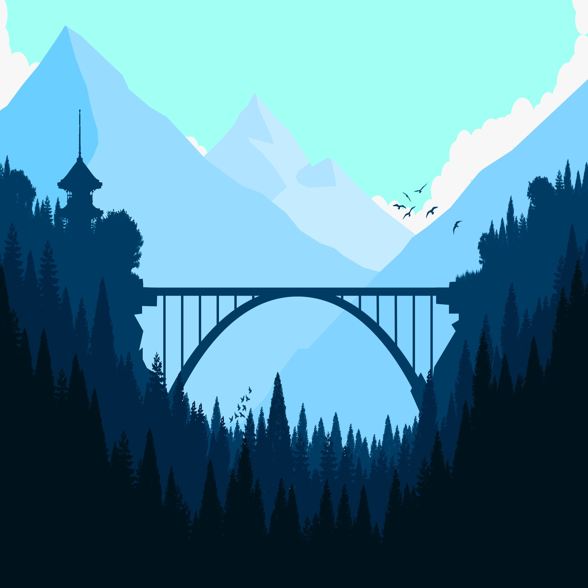
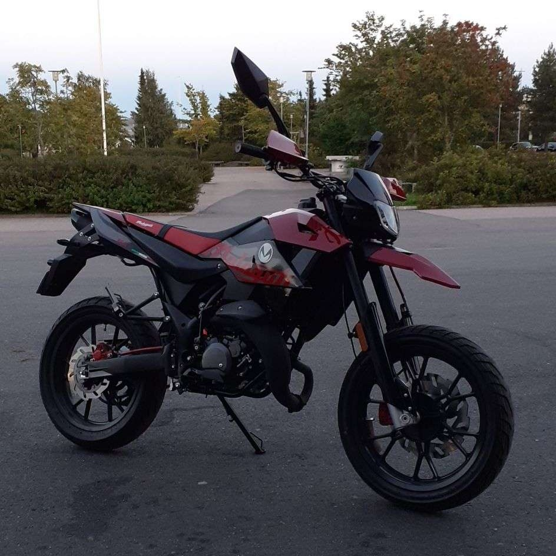

Vuoristo
Vuoristot syntyvät mannerlaattojen törmäyksistä ja ovat tärkeitä maapallon pinnanmuotoja, jotka vaikuttavat säähän (sateet vuoren tuulenpuolella), jokiin ja vesivarastoihin, ja ne voivat olla joko korkeita ja teräviä (nuoret) tai matalia ja loivia (vanhat), kuten Alpit, Himalaja ja Andit.

Malaguti XSM 125
Moottoripyörä on kaksipyöräinen, peräkkäin pyörillä varustettu moottoriajoneuvo.

Luonto
Suomen yleisin eläin on metsämyyrä.